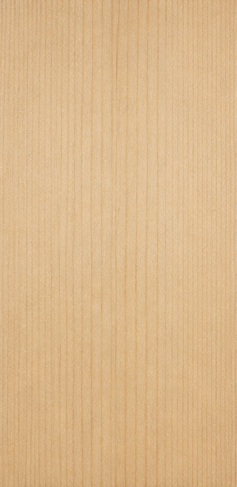
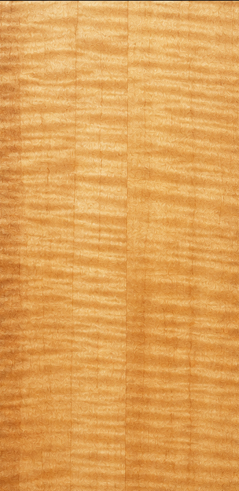
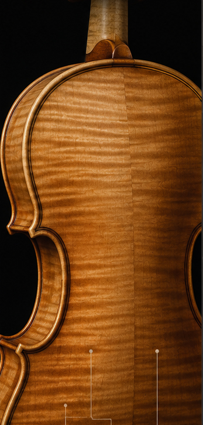
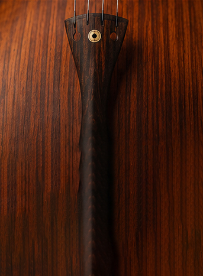
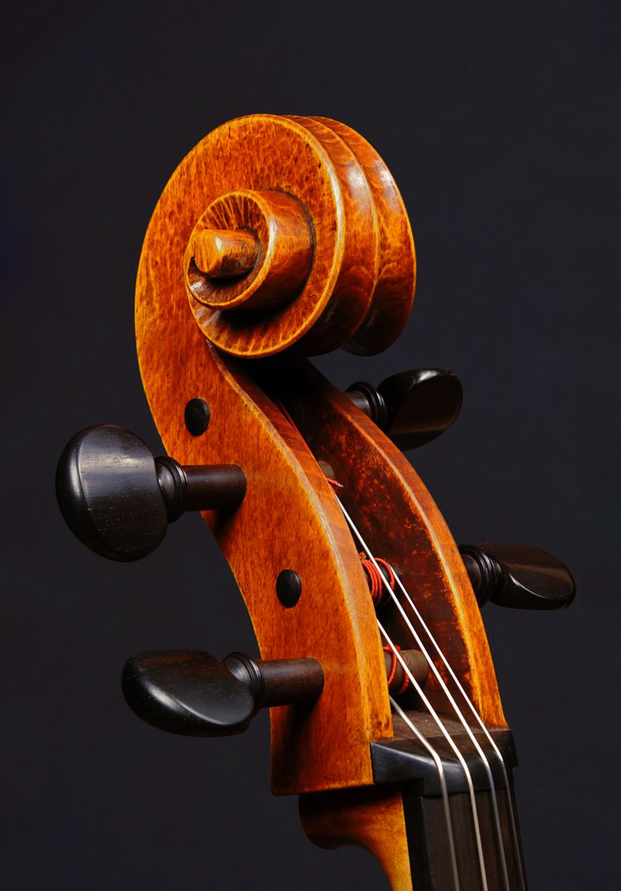
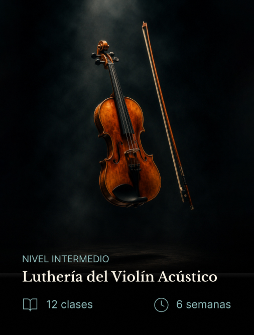
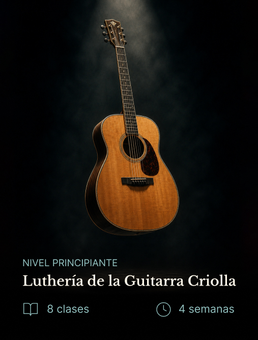

Del taller
al escenario
Construcción, restauración y formación en luthería de instrumentos de orquesta para músicos profesionales

El lugar donde la música toma forma
Somos un taller y escuela de lutería especializado en instrumentos de cuerda para orquesta, honrando una tradición artesanal que trasciende generaciones.
Las voces de la orquesta de cámara
Desde los registros más agudos hasta los más graves, cada instrumento cumple un papel esencial dentro de la orquesta.
Detrás del proceso artesanal
Desde la selección de la madera hasta el ajuste final, cada etapa es realizada de forma artesanal para garantizar calidad, equilibrio y carácter.
La materia prima del sonido
Cada madera posee características únicas que influyen en la resonancia, estabilidad y personalidad del instrumento
-

Abeto
Tapa armónicaLigero y resonante, ideal para la proyección sonora

-

Arce
Fondo y arosAporta estabilidad, resistencia y riqueza tonal.

-

Palisandro
Accesorios y decoraciónValorado por su resistencia y belleza natural

-

Ébano
Clavijas y detallesDenso y duradero, utilizado en piezas de precisión

Formación en Luthería
Programas diseñados para acompañar cada etapa del aprendizaje, combinando tradición artesanal, precisión técnica y experiencia práctica.
-

Nivel intermedio
Construcción del Violín Acústico
Construí un violín acústico desde cero aprendiendo técnicas tradicionales de luthería.
-

Nivel incial
Construcción de la Guitarra Criolla
Aprendé cada etapa del proceso de construcción de una guitarra acústica.
-
Nivel avanzado
Construcción del Contrabajo
Dominá las técnicas de construcción del instrumento de cuerda más imponente de la orquesta.